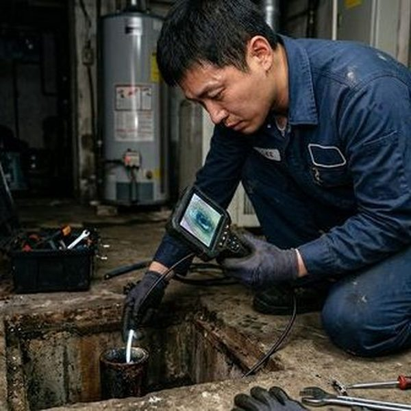

온돌 배관 누수 증상과 원인
온돌(바닥 난방) 배관 누수의 대표적 증상은 보일러 압력 게이지의 지속적 하락, 바닥 특정 부분의 이상 고온 또는 습기, 하층 세대 천장의 물 얼룩 등입니다. 원인은 주로 배관 노후화(XL파이프 경년열화), 시공 불량(배관 이음부 접합 미흡), 외부 충격(못, 앵커 박기), 동파 후유증 등이 있습니다. 특히 1990~2000년대 시공된 XL파이프는 20년 전후로 경화가 진행되어 미세 균열이 발생하기 쉽습니다. 제우스시설관리는 최신 누수탐지 장비로 바닥을 뜯지 않고도 누수 지점을 정확하게 찾아냅니다.
온돌 배관 누수 수리 방법과 비용
누수 수리는 크게 부분 보수와 전체 교체로 나뉩니다. 누수 지점이 1~2곳이면 해당 부분만 절개하여 보수하며, 비용은 50~150만원 수준입니다. 배관 전체가 노후된 경우 전면 교체가 필요하며, 30평 기준 300~600만원이 소요됩니다. 수리 절차는 ①누수탐지 장비로 정확한 위치 확인 → ②바닥 부분 절개 → ③손상 배관 제거 및 신규 배관 연결 → ④압력 테스트 → ⑤바닥 복구 순입니다. 제우스시설관리는 비파괴 누수탐지 기술로 불필요한 바닥 훼손을 최소화하며, 28분 내 출동하여 신속하게 진단합니다.

자주 묻는 질문
Q. 온돌 배관 누수를 방치하면 어떻게 되나요?
A. 하층 세대 피해 확대, 곰팡이 발생, 바닥재 손상, 보일러 고장으로 이어질 수 있어 발견 즉시 수리해야 합니다.
Q. 누수탐지 비용은 따로 받나요?
A. 제우스시설관리는 수리 계약 시 누수탐지 비용을 무료로 제공합니다. 탐지만 원하시면 별도 비용이 발생합니다.